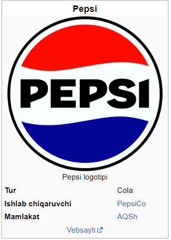

Pepsi — PepsiCo kompaniyası tárepinen islep shiǵarılatuǵın alkogolsız gazlı ishimlik. 1893-jıldan Brad's Drink, 1898-jıldan Pepsi-Cola atları astında islep shıǵarılǵan.[1] Ishimlik, 1961-jıldan baslap Pepsi atı menen islep shıǵarılıp atır.
Pepsi birinshi ret 1893-jılda Arqa Karolina shtatınıń Nyu-Bern qalasındaǵı dárixanasında ishimlikti satqan Kaleb Bredxem tárepinen „Bredning ishimligi“ retinde oylap tabıw etilgen.